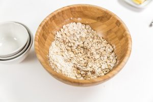
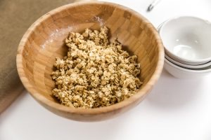
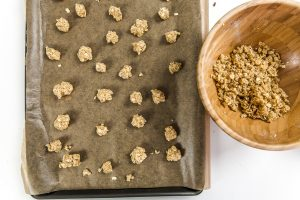
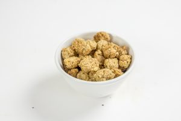
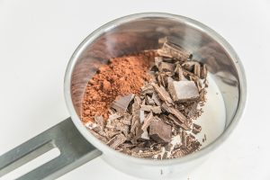

Bananes rôties cookies aux flocons d’avoine et chocolat

Aujourd’hui je vous retrouve avec une nouvelle recette de petit-dej ou goûter c’est comme vous voulez. Elle est composée de cookies aux flocons d’avoine, de chocolat fondu et de bananes rôties.
Mon dieu, si quelqu’un peut m’aider dans l’intitulé de cette recette ce serait avec plaisir! Je ne sais pas comment appeler cette chose dégoulinante de gourmandise!! Je ne sais pas si je peux considérer cette recette de « healthy » (saine) en tout cas je peux vous dire qu’elle n’est pas malsaine! Elle a des airs comme ça de recette qui aimerait te refiler 10kg dans les fesses dès la première bouchée, pourtant non, franchement je vous l’assure (je me suis pesée ce matin et tout va bien 🙂 )! Finalement dans ce bol gourmand on a des cookies préparés avec des flocons d’avoine (mon dieu ces cookies sont juste une tuerie, vous pouvez les faire seuls vous devriez aimer ça), de la sauce au chocolat (la même que celle dans le tiramisu au chocolat), des amandes grillées et de la banane rôtie avec de la cannelle et légèrement caramélisée grâce au miel. J’allais presque oublier le yaourt qui se cache sous tout ça (prenez votre préféré, moi c’est un yaourt grec). Bref, cette recette vous pouvez la faire le matin pour un petit déjeuner gourmand (comme moi ce jour-là) ou pour le goûter histoire de bien se requinquer!! Pour en revenir aux cookies (il faudrait d’ailleurs que je leur consacre un article entier, ils le méritent largement), je les fais souvent pour les manger tout seul mais aussi pour les mettre sur mes porridges (toujours plus de flocons d’avoine^^) ou sur mes smoothies bowl histoire d’ajouter un peu de croquant (je les fais tout petits tout minis mais on peut aussi les faire plus gros comme de vrais cookies). Finalement j’ai envie de dire qu’à peu près toutes les préparations de cette recette peuvent se faire indépendamment les unes des autres (comme les bananes rôties par exemple) mais mélangées toutes ensembles ça crée un mix vraiment vraiment délicieux, ultra gourmand et on peut le dire assez réconfortant!! Si jamais vous tentez la recette venez me dire ce que vous en avez pensé :), je vous laisse découvrir cette petite recette pour laquelle je n’ai toujours pas trouvé de nom et moi je vous dis à très vite pour un nouvel article!!
Enregistrer
Enregistrer
Enregistrer
Enregistrer
Enregistrer
Enregistrer
Enregistrer
Enregistrer
Enregistrer
Enregistrer
Ingrédients
- Flocons d'avoine - 85g
- Farine (celle de votre choix) - 3 càs
- Bicarbonate de sodium - 1/2 càc
- Cannelle - 1 càc (plus ou moins selon vos goûts)
- Sel - 1 pincée
- Cassonade (sucre de noix de coco pr moi) - 35g
- Beurre mou - 50g
- Extrait de vanille - 1 càc
- Cacao en poudre (non sucré de préférence plutôt choisir un cacao type van houten à 70% de cacao) - 2 càs
- Cassonade - 35g
- Lait de coco (vous pouvez utiliser le lait de votre choix) - 100ml
- Chocolat noir (ou au lait) - 100g
- Huile neutre (de coco, de pépins de raisins etc) - 1 càs
- Extrait de vanille - 1 càc
- Bananes - 4
- Cannelle - 1 càc
- 1 càs de miel
- Autres fruits de votre choix
- Amandes effilées - 1 poignet
- Yaourt (celui que vous préférez, ici du yaourt grec) - 1 par personne
Instructions
- Préchauffer le four à 180°
- Dans un saladier; verser les flocons d'avoine, la farine, le sucre, le bicarbonate de soude, la cannelle, l'extrait de vanille et la pincée de sel
- Mélanger le tout
- Ajouter le beurre mou coupé en morceaux
- Utiliser vos doigts pour mélanger le tout et que le mélange soit homogène
- Amalgamer un peu de pâte pour en faire des petites boules et déposez-les sur du papier sulfurisé
- Enfournez 10 minutes jusqu'à ce que les cookies soit dorés
- Penser à vérifier la cuisson car selon la taille de vos cookies le temps de cuisson peut varier.
- Dans une casserole, verser le lait, ajouter le cacao en poudre, le chocolat en morceaux grossièrement coupé, la cassonade, l'huile
- Sur feu doux, faire fondre le tout
- Une fois que le chocolat est fondu ajouter l'extrait de vanille
- Réserver pendant que vous faites cuire les bananes
- Vous pouvez conserver cette sauce au chocolat au frais pendant 5 jours dans un récipient fermé. Pour le faire fondre à nouveau, mettez le au micro-onde par tranches de 15 secondes (remuez entre à chaque fois) ou si comme moi vous n'avez pas de micro-onde, mettez-le quelques minutes dans une casserole d'eau bouillante (en remuant régulièrement)
- Couper les bananes en deux dans le sens de la longueur
- Dans une poêle (j’utilise une poêle grill), faire cuire les bananes sur feu moyen
- Arrosez-les de miel et de cannelle des deux côtés
- Faire griller les bananes environ 5 minutes en les retournant à mi-cuisson
- Variante : vous pouvez mélanger le miel et la cannelle à deux càs de rhum et imbiber les bananes avant de les passer sur le grill!
- Faire dorer des amandes effilées
- Dans un bol, placer les bananes grillées
- Ajouter le yaourt (nature ou grec pour moi)
- Arroser de sauce au chocolat
- Parsemer d'amandes effilées
- Ajouter du granola, des fruits de votre choix et servir immédiatement





Les tips de la communauté
Recette très gourmande qui fait l'unanimité. Tous les commentaires sont positifs et admiratifs. Les utilisateurs apprécient le côté indulgent du petit-déjeuner et beaucoup testeront.
Astuces
- C'est le petit-déjeuner ou goûter parfait pour moments cocooning
- Combiner bananes rôties et cookies crée une gourmandise exceptionnelle
- Ajouter des pépites de chocolat supplémentaires pour plus d'indulgence
- Ajouter du zeste d'orange et cannelle pour variation
Variantes suggérées
- Ajouter zeste d'orange et cannelle avec pépites chocolat
- Varier les garnitures selon saison
Ajustements signalés
- que je tente. Merci pour cette belle idée !